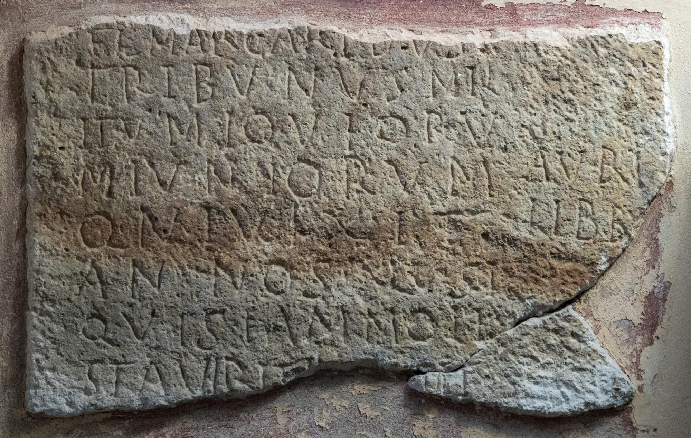

The Inscription of Marcaridus
PHYSICAL DESCRIPTION
- Type
- Lateral slab of the sarcophagus.
- Material(s)
- Limestone.
- Execution
- Inscribed.
- Dimensions
- 53 × 83 cm
- Epigraphic Field
- 53 × 83 cm
- Letters Height
- 4-6 cm
Palaeographic comment
Dextrograde direction, horizontal alignment, vertical module, irregular ductus, left-aligned layout.
A at times with broken crossbar;
F with crossbar shorter than the upper arm.

INSCRIPTION
INTERPRETATIVE TRANSCRIPTION
LID:
CHEST:
Fl(avius) Marcariḍụṣ,
tribunus mil
=
itum Iovioru
=
m Iuniorum,
q⸢u⸣i vịx̣it
annos XLV. Si
quis eam <arcam> moli
=
stavirit (!), ịṇ fi<s>co
ḍẹṭ
auri
libra (!) I
APPARATUS CRITICUS
1a. M(ANIBVS) D(IS), Lettich 1983
.
5. QVI, Bertolini 1874a, Bertolini 1874b, Bertolini 1875b,
CIL V 8753,
ILCV 441, Scarpa Bonazza Buora Veronese 1978, Lettich 1983
.
6.
Bertolini 1874a, Bertolini 1874b
.
8. DPF, Bertolini 1874a, Bertolini 1874b
.
TRANSLATION
Flavius Marcaridus, tribunus militum of the Iovii iuniores, who lived 45 years.
If anyone violates this (sarcophagus), they shall pay one (Roman) pound of gold to the fiscus.
PEOPLE
Flavius Marcaridus
- NOMEN
- Flavius
- COGNOMEN
- Marcaridus
- GENS
- Flavia
- ORIGIN (of the name Marcaridus)
- germanic
- GENDER
- male
- OCCUPATION
- soldier
- RANK
- tribunus
- NUMERUS
- Iovii Iuniores
- ROLE
- dedicator/deceased
Bibliography
| Bertolini 1874a, 28, nr. 21. |
| Bertolini 1874b, 287, nr. 8. |
| Bertolini 1875b, 119. |
| CIL V 8753 |
| ILCV 441 |
| Hoffmann 1963, 46, nr. 30. |
| Scarpa Bonazza Buora Veronese 1978, 68, nt. 259. |
| Lettich 1983, 89-90, nr. 50. |
- EDR
-
EDR097901
- Author of the record:
- Damiana Baldassarra
- Date:
- 26-11-2007
COMMENTARY
Flavius Marcaridus was a tribunus of the Iovii iuniores. As Lettich notes (Lettich 1983, 90), towards the end of the 4th century numerorum tribuni also appear in the Codex Theodosianus, an element that would confirm a dating of the sarcophagus to that period.
The Iovii are a clear reference to Jupiter (Barbero 2006, 70) and would form a pair with the Victores, whose name was taken from Hercules Victor. Although Jupiter and Hercules were the protective deities of Diocletian and Maximian respectively (Barbero 2006, 70), the theory put forward by Hoffmann (Hoffmann 1969, 131-164), according to which these units were founded in the Tetrarchic period, has been challenged by recent scholarship (Rocco 2012, 163; Barbero 2006, 70).
The cognomen Marcaridus is of Germanic origin (Schönfeld 1911, 161, 303-305).
Lettich (Lettich 1983, 89-90) records the sigla M(anibus) D(is) on the lid of the sarcophagus, which is now lost. However, nothing of the kind is described by Bertolini (Bertolini 1874a, 28; 1874b, 287; 1875b, 119), the first eyewitness, nor by the other critical editions.